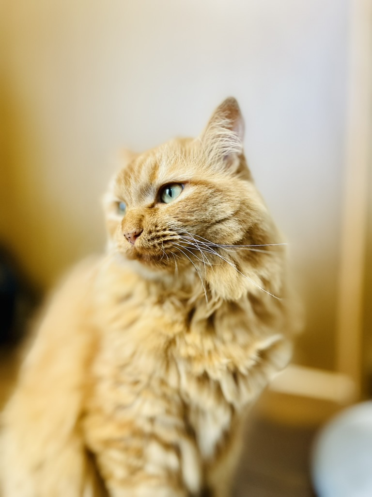
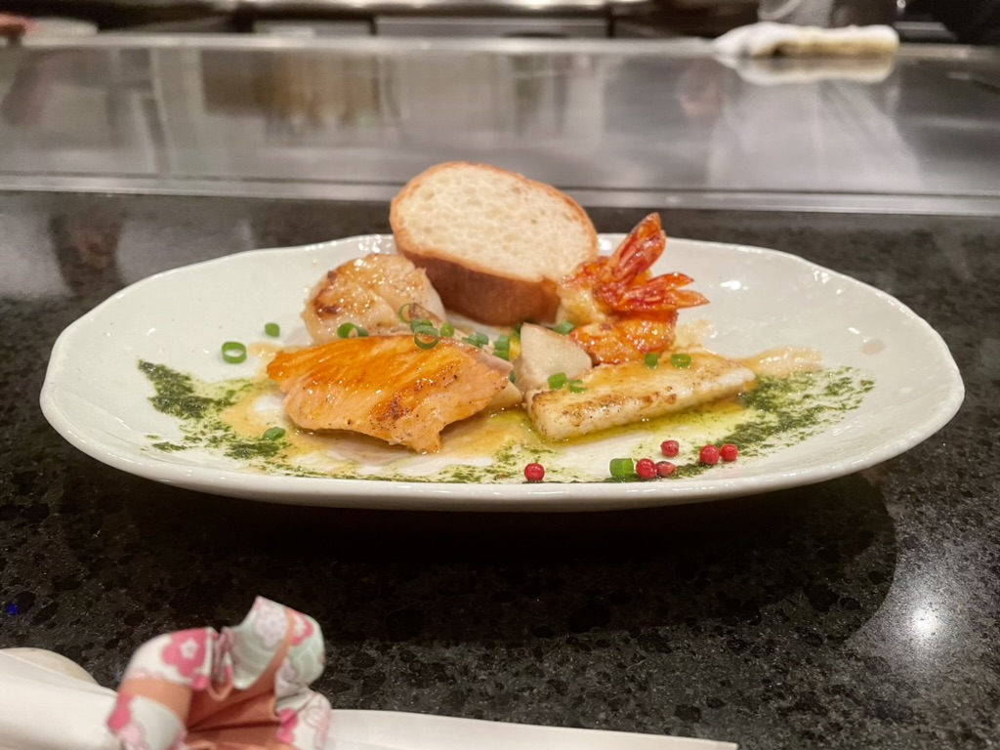
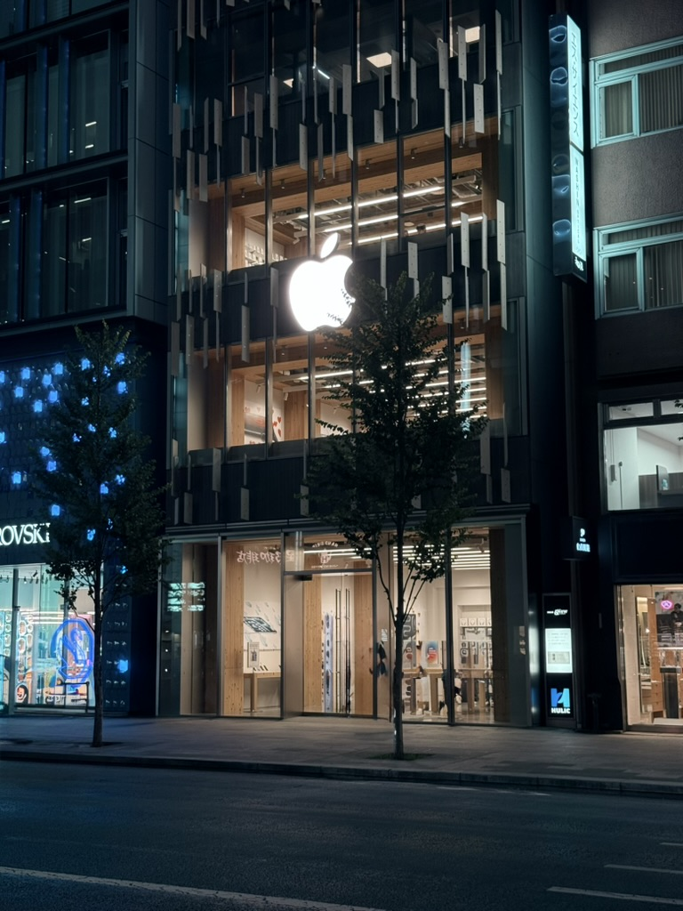
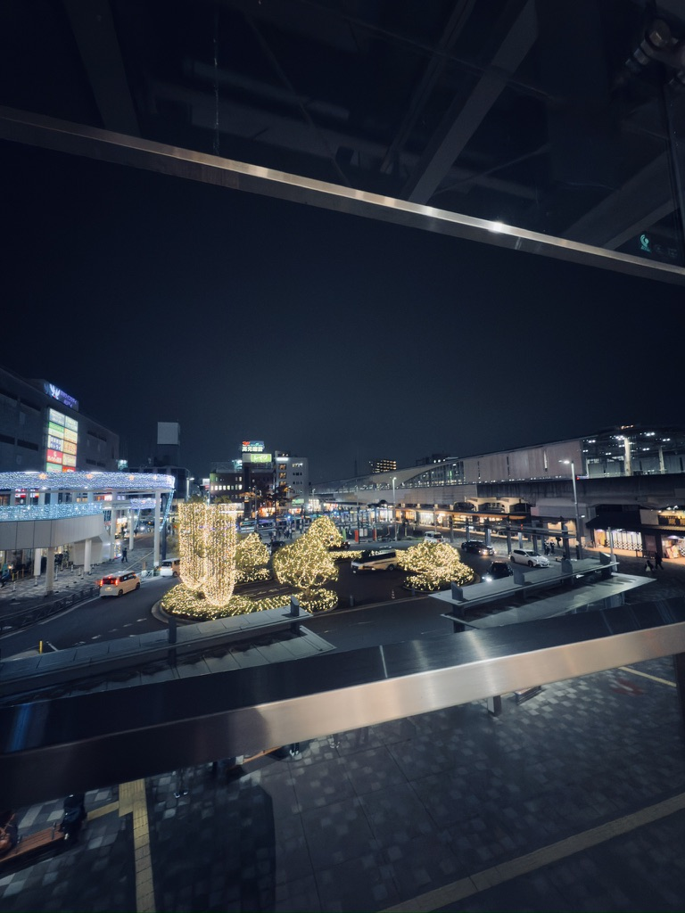

On this site I present the photos I have taken.There are some beautiful photos so please take a look.

We have captured the fleeting expressions and gestures of living creatures. Feel the natural emotions and warmth that can only be conveyed because they have no words.
I photograph plants as they change with the seasons. I hope that you can feel the quiet strength of nature from the small buds and overlapping leaves.
I focused on capturing the light and atmosphere that can only be found in that place. I hope that through the photographs, you can experience the feeling of being there.

Tasting food with your eyes is an important part of cooking, so we've captured a moment that conveys the color, texture, and even temperature of the food.

The photographs capture the character of buildings that have been created over time and by the hands of people. Feel the history and everyday life that can be found in their shapes and textures.

The city at night is another world created by light and shadow. Every time you take a picture, that moment remains in your memory.